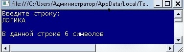
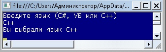

| Тема 3. Условные операторы C# | ||
| Назад | ||
|
Условные операторы позволяют выполнять ветвление, чтобы не выполнялась каждая строка кода, как она следует в программе. В языке C# — два типа условных операторов: двойного выбора (if) и множественного выбора (switch). Оператор if
Оператор if. Для организации
условного ветвления язык C# унаследовал от С и С++ конструкцию
if…else (если … иначе). if (условие) оператор (операторы) else оператор (операторы); IF
IF Statements
Else if МНОЖЕСТВЕННЫЙ ВЫБОР SWITCH
Switch statement
Если по каждому из условий нужно выполнить более одного
оператора, эти операторы должны быть объединены в блок
с помощью фигурных скобок {…}. Это также
касается других конструкций C#, в которых операторы могут быть
объединены в блок, таких как циклы for и while, см. далее. using System;
namespace ConsoleApplication1
{
class Program
{
static void Main(string[] args)
{
string myStr;
Console.WriteLine("Введите строку: ");
myStr = Console.ReadLine();
if (myStr.Length < 5)
Console.WriteLine("\nВ строке меньше 5 символов");
else if ((myStr.Length >= 5) && (myStr.Length <= 12))
Console.WriteLine("\nВ строке {0} символов", myStr.Length);
else Console.WriteLine("\nВ строке больше 12 символов");
Console.ReadLine();
}
}
}
Введем слово ЛОГИКА, тогда:  Оператор switch
Оператор switch. Вторым оператором
выбора в C# является оператор
switch, который обеспечивает множественное ветвление
программы. switch(выражение)
{
case константа1:
последовательность операторов
break;
case константа2:
последовательность операторов
break;
case константаЗ:
последовательность операторов
break;
...
default:
последовательность операторов
break;
}
Важно отметить, что заданное выражение в операторе switch должно быть целочисленного типа (char, byte, short или int), перечислимого (enum) или же строкового (string). А выражения других типов, например с плавающей точкой, в операторе switch не допускаются. Зачастую выражение, управляющее оператором switch, просто сводится к одной переменной. Кроме того, константы выбора должны иметь тип, совместимый с типом выражения. В одном операторе switch не допускается наличие двух одинаковых по значению констант выбора.
Хотя оператор switch…case знаком
программистам на С и С++, в C# он немного безопаснее, чем его
эквивалент С++. В частности, он запрещает «сквозные» условия
почти во всех случаях. Это значит, что если часть case
вызывается в начале блока, то фрагменты кода за последующими
частями case не могут быть выполнены, если только не
используется явно оператор
goto для перехода к ним. Компилятор
обеспечивает это ограничение за счет требования, чтобы
за каждой частью case следовал оператор
break, в противном случае он выдает ошибку. using System;
namespace ConsoleApplication1
{
class Program
{
static void Main(string[] args)
{
Console.WriteLine("Введите язык (C#, VB или C++)");
string myLanguage = Console.ReadLine();
sw1(myLanguage);
Console.ReadLine();
}
// Данный метод выводит выбор пользователя
static void sw1(string s)
{
switch (s)
{
case "C#":
Console.WriteLine("Вы выбрали язык C#");
break;
case "VB":
Console.WriteLine("Вы выбрали язык Visual Basic");
break;
case "C++":
Console.WriteLine("Вы выбрали язык С++");
break;
default:
Console.WriteLine("Такой язык я не знаю");
break;
}
}
}
}
Результат:  |
||
| Конспект подготовлен Бакулиным А. М. 2022 год. | ||